International Strategy and Reconciliation Foundation
Igor Barahona
Mathematics Institute of the UNAM, Mexico
Giang Nguyen (ISR Foundation Center for Interdisciplinary Research)
Clara Kyung (McGill University)
Ariel Lee (ISR Foundation Center for Science Diplomacy)
Tiffany Lee (ISR Foundation Center for Science Diplomacy)
Hannah Cho (University of Pennsylvania)
Elliott Chun (University of North Carolina, Chapel Hill)
Cindy Won (Brown University)
Star Ying (Commerce Data Service, U.S. Department of Commerce)
Asaph Young Chun (U.S. Census Bureau)
Note: All authors are affiliated with the International Strategy and Reconciliation Foundation.
Introduction
Research questions
Methodology
Policy challenges in developing countries
Power of evidence-based policymaking
Principles of data visualizations
Demonstration of data visualizations
Conclusion
Background
Evidence-based policymaking (EBP) has become valuable to policymakers.
Researchers use data visualizations (DVs) to communicate their messages.
Research Purpose
Demonstrate power of DVs, using data from multiple sources.
Show how DVs may help the United Nations and non-governmental agencies develop evidence-driven decisions for sustainable development programs.
DVs and EBP in countries in transition?
What data?
How can we demonstrate power of EBP with DVs?
Merits and drawbacks of EBP and DVs?
Three main sources of data:
United Nations’ Millennium Development Goals Indicators
World Bank’s Open Data
DPRK Survey and Census Data
Develop DVs pertaining to health, economic, and social issues in countries in transition:
Apply principles of DVs as offered by Nguyen, Ying, Chun, et al. (2015)
Tailor DVs to three major areas critical to the development of countries in transition: public health, economics, and social/education development.
Use R and Tableau to develop DVs
Incredible progress has been made in achieving the Millennium Development Goals set in 2000.
Nonetheless, there still remains much work to be done in a variety of areas
towards Sustainable Development Goals the U.N. aims to accomplish by 2030:
poverty and hunger,
gender inequality,
child and maternal mortality,
disease,
environmental sustainability,
and setbacks due to crises, shocks, and vulnerabilities
Poverty and Hunger
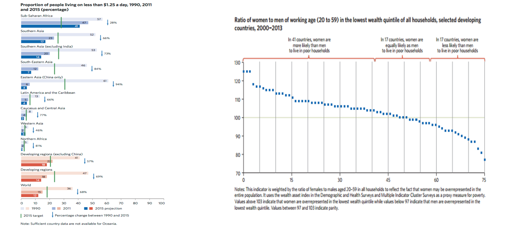
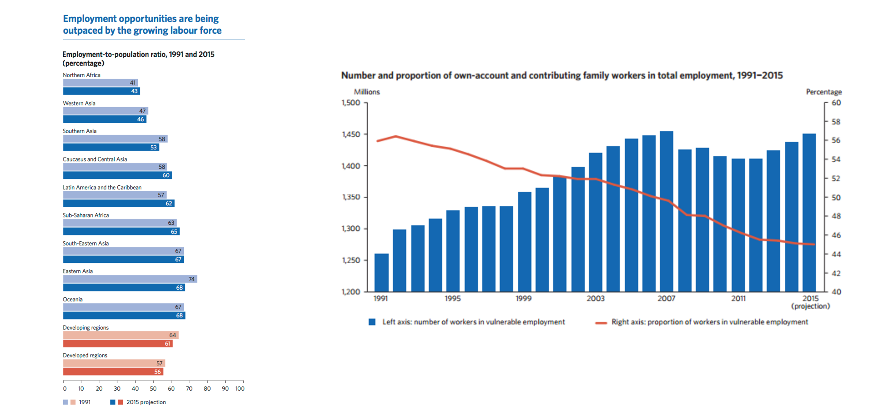
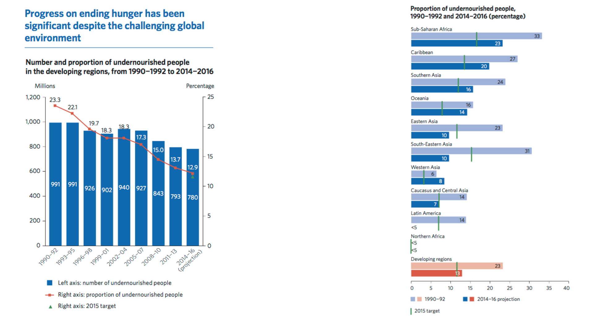
Gender Inequality
Women are less likely to participate in the labour force than men
Especially troubled in Northern Africa, Southern Asia, and Western Asia.
One-third of countries in developing regions have not achieved gender parity in primary education.
Globally, women earn 24% less than men.
Women’s political representation has increased, but is nowhere near parity.
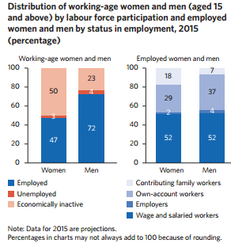
Child Mortality
Substantial progress has been made in reducing child mortality, target is not acheived.
Given current trend, it will take another ten years for the target to be reached.
Socioeconomic disparities cause different rates of child mortality.
Progress towards eliminating measles has stalled.
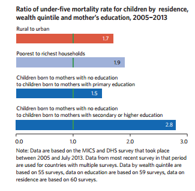
Maternal Mortality
One in four babies worldwide are delivered without skilled care
Disparity across regions in access to maternal health care
Only half of pregnant woman receive the recommended amount of antenatal care
Sub-Saharan Africa and Latin America and the Caribbean have made slow progress on reducing adolescent childbearing.
There is a lack of basic data on births, deaths, and health
Prevents effective policies from being created
Globally, only 51 percent of countries have some data on maternal causes of death.
Evidence-based Policymaking
EBP utilizes evidence from research to inform the policymaking process.
EBP has become increasingly important in the last few decades in both the U.S. and the U.K.
U.K.: emphasis on EBP grew in 1997.
U.S.: EBP implemented by the Obama administration .
EBP is crucial to Congress’ spending decisions.
Combating Diseases
The number of people newly infected with HIV continues to decline
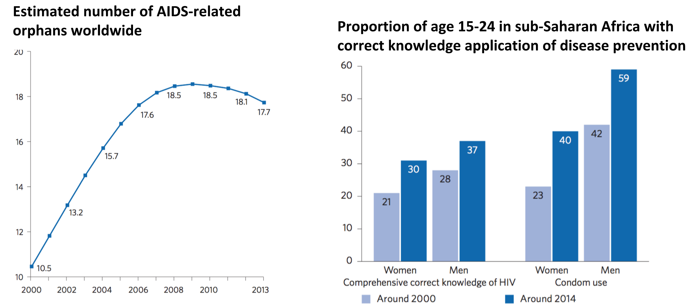
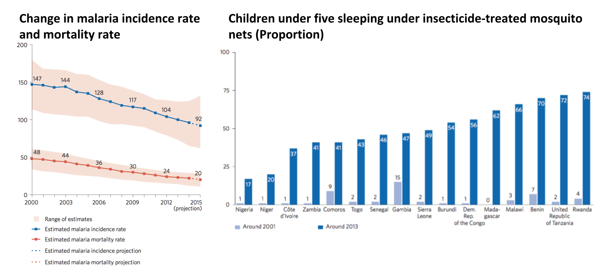
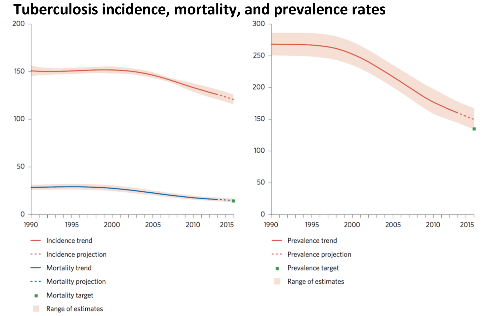
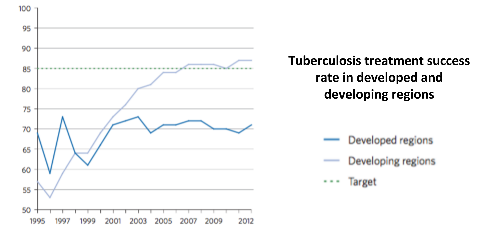
Environmental Sustainability
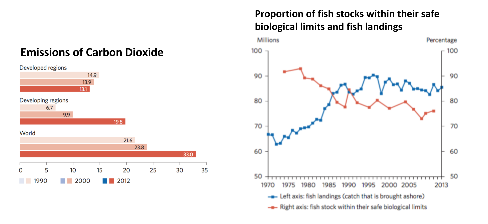
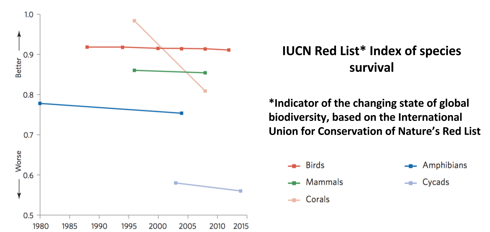
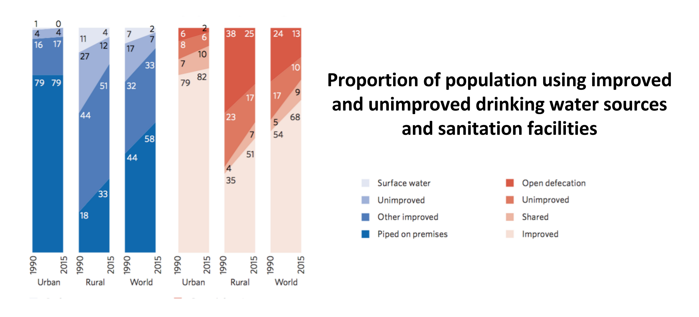
Setbacks due to crises, shocks, and vulnerabilities
Unexpected crises and unforeseen problems in certain regions have proven to be sudden and major obstacles that impede progress
2008 Economic Crisis severely affected many sub-Saharan African countries
Ebola outbreak teaches many lessons for health and development
Developing countries are vulnerable to natural disasters
Political instability and conflict has been a major factor hindering progress
Advantage of EBP: its methodical approach to policymaking
The advantage of EBP could be shown in three aspects (Baron & Haskins, 2011; Liebman, 2013; Muhlhausen, 2015):
Social benefit: by collecting high-quality evidence on the effectiveness of social programs.
Economic benefit: expanding effective social programs will help fully utilize any untapped human potential, leading to faster economic growth (Cohen & Soto, 2007; Liebman, 2013; Mankiw, Romer, & Weil, 1992).
Fiscal benefit: shutting down ineffective programs will help reduce debts in the long run.
EBP can also be applied to countries in transition, with greater potential for improvement.
Issues with applying EBP to countries in transition:
political instability,
conflict,
academic freedom,
media freedom ,
and civil society
Data Visualizations for Evidence-based Policymaking
“the use of computer-supported interactive visual representations of abstract data to amplify cognition”
- Card, Mackinlay, Shneiderman (1999)
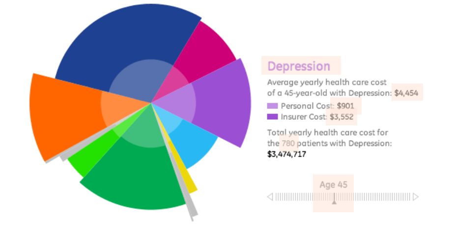
Few’s critiques:
What do the radii mean?
Should we compare the areas of the slices?
What about the angles of the slices?
Trouble comparing radii and areas
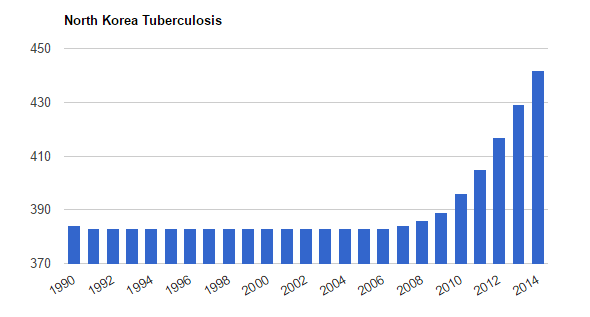
Quantitative values should be displayed using the lengths of simple, two-dimensional objects.
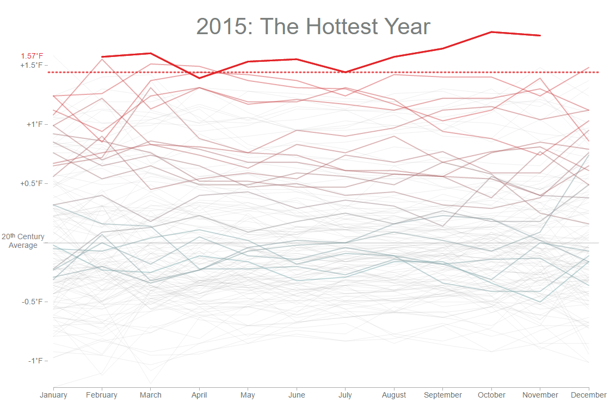
Viewers cannot see a pattern formed by multiple values if they only look at one value at a time.
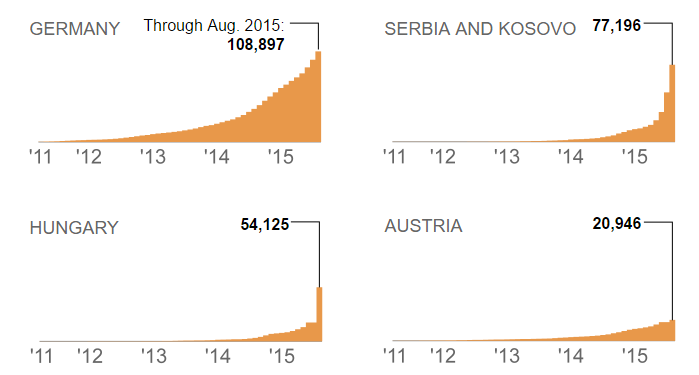
Showing multiple graphs together can be better than showing a single graph.
Viewers should be able to focus on data of interest.
System 1, which relies on intuition and heuristics, and
System 2, which relies on careful analytical thinking.
When viewers are engaged in data visualizations, system 2 is triggered, which leads to better processing of the information being presented.
Interactive DVs stimulate viewers’ active processing of the information.
Visualizations tailored to key policy issues for countries in transition
Data Visualization Designers:
Igor Barahona, Ariel Lee, Hannah Cho, Giang Nguyen, Star Ying
Poverty in Mexico and its Relation with Social Metrics
Igor Barahona
Women’s Health, Education and Political Empowerment in Developing and Developed Countries and Evidence-Based Policy Implications
Ariel Lee
Maternal Mortality Ratio per 100,000 live births of Developing and Developed Countries
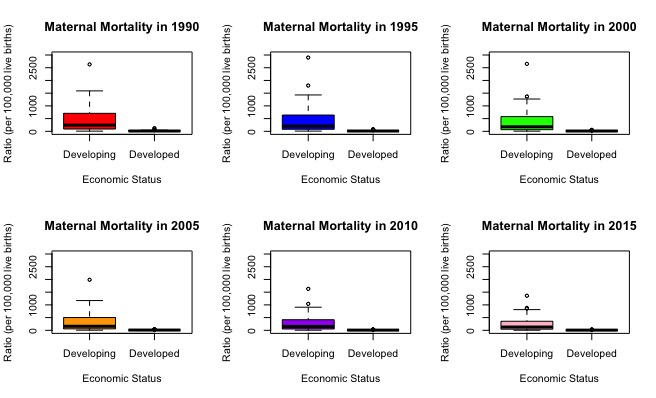
Heatmap of Maternal Mortality in Developing and Developed Countries
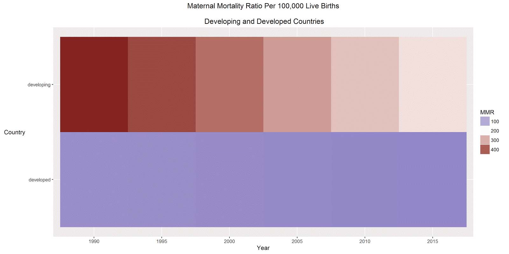
Gender Parity Index in secondary level enrolment in Developing and Developed Countries
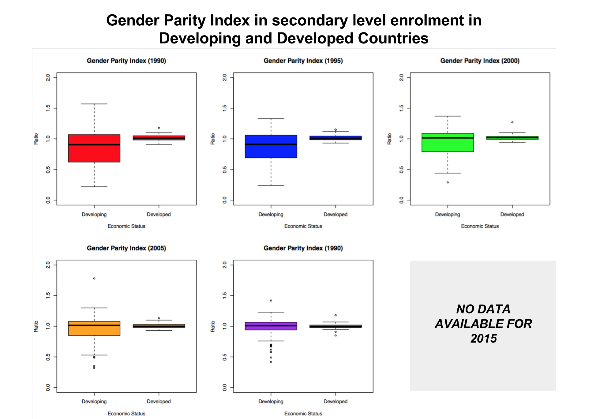
Proportion of Seats Held by Women in National Parliament in Developing and Developed Countries
Implications for Policymakers:
Focus more on helping certain developing countries (outliers)
Developing countries contain a range of countries
Developed countries need to work on women in higher levels of society
Malnutrition in Central America and its Relationship to Key Health Conditions
Hannah Cho
Percentage of Underweight Children Under Age 5 in Mexico/Central American Region of Developing Economies as defined by World Economic Situation and Prospects 2012
Honduras has highest drop in percentage
Costa Rica has lowest percentages overall
Guatemala has highest percentages overall
Prevalence of stunting among children under age 5 in Mexico/Central America Region
El Salvador has highest drop in percentage
Costa Rica has lowest percentages overall
Guatemala has highest percentages overall
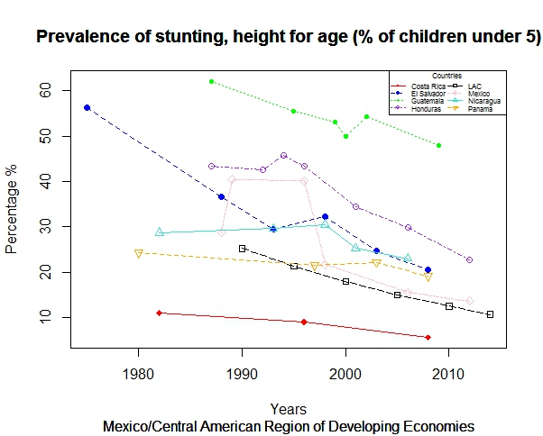
Incidence of Tuberculosis per 100,000 people for Mexico/Central America Region
Honduras has greatest drop in incidence
Costa Rica has lowest incidence overall
Maternal mortality ratio per 100,000 live births
Honduras has the steepest drop from 1990 to 2000
Costa Rica has lowest percentages
Overall, Nicaragua has highest percentages
Implications for Policymakers:
Malnutrition in DPRK (North Korea) and Evidence-based Policy Implications
Giang Nguyen
Maternal mortality rate (MMR) in the DPRK (DPRK 2008 Census, Table 18)
MMR = (number of maternal deaths/ number of live births)*100,000
Ryanggang has the highest MMR.
Pyongyang has the lowest MMR.
Percentage of maternal deaths at hospital (DPRK 2008 Census, table 18)
Percentage = (number of maternal deaths at hospital/ number of maternal deaths)*100
Pyongyang has the highest percentage
Ryanggang, South Hamgyong and Kangwon have the lowest percentages.
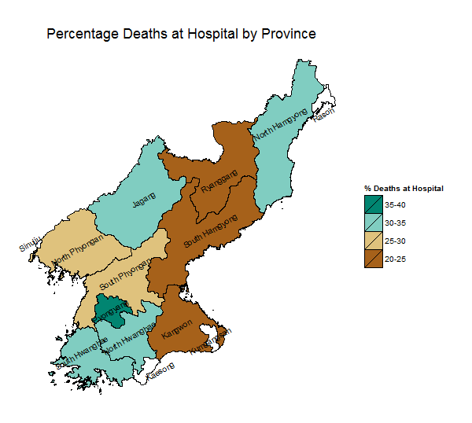
Implications for policymakers: quality of facilities, transportation, and weather
Ryanggang is mountainous. Difficult access to the hospitals.
80% of DPRK is mountains and uplands. Winters are long and cold.
Topographical structure and weather can present challenges to citizens in the northeast.
Health facility in developing countries.
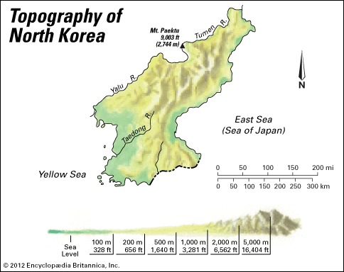
Chronic malnutrition (stunting)
Defined from the height of age (H/A) index, expressed in z-score (HAZ)
HAZ represents the number of standard deviations units from the median of the WHO 2006 reference population.
Global stunting is defined as HAZ < -2 SD.
Moderate stunting is defined as HAZ < -2 SD and >= -3 SD.
Severe stunting is defined as HAZ < -3 SD.
Stunting is irreversible after 24 months of age.
Global stunting in children in the DPRK (NNS 2012, Table 6.2)
Ryanggang has the highest prevalence.
Pyongyang has the lowest.
As the provinces get further away from Pyongyang, mal
nutrition seems to increase in intensity.
Acute malnutrition (wasting)
Estimated from the weight for height (W/H) index, expressed in z-score (WHZ)
WHZ represents the number of standard deviations units from the median of the WHO 2006 reference population.
Global wasting is defined as WHZ < -2 SD.
Moderate wasting is defined as WHZ < -2 SD and >= -3 SD.
Severe wasting is defined as WHZ < -3 SD.
Global wasting in children in the DPRK (NNS 2012, Table 6.3)
Ryanggang has the highest prevalence.
Pyongyang has the lowest.
As the provinces get further away from Pyongyang, malnutrition seems to increase in intensity.
Policy implications
Jagang and Ryanggang have the highest prevalence of malnutrition.
These provinces have little migration, mainly migration to Pyongyang.
Citizens unable to migrate to avoid stunting?
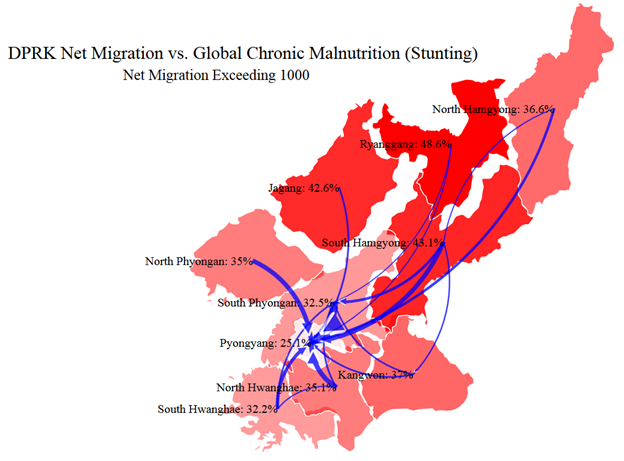
Policy implications
Each type of malnutrition takes up a considerable amount of the landmass in each province.
Global and moderate acute malnutrition show very little difference.
In order to tackle acute malnutrition, we must simultaneously face global and moderate cases
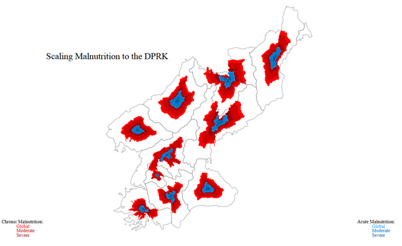
Interactive DVs of Public Health Issues
Giang Nguyen
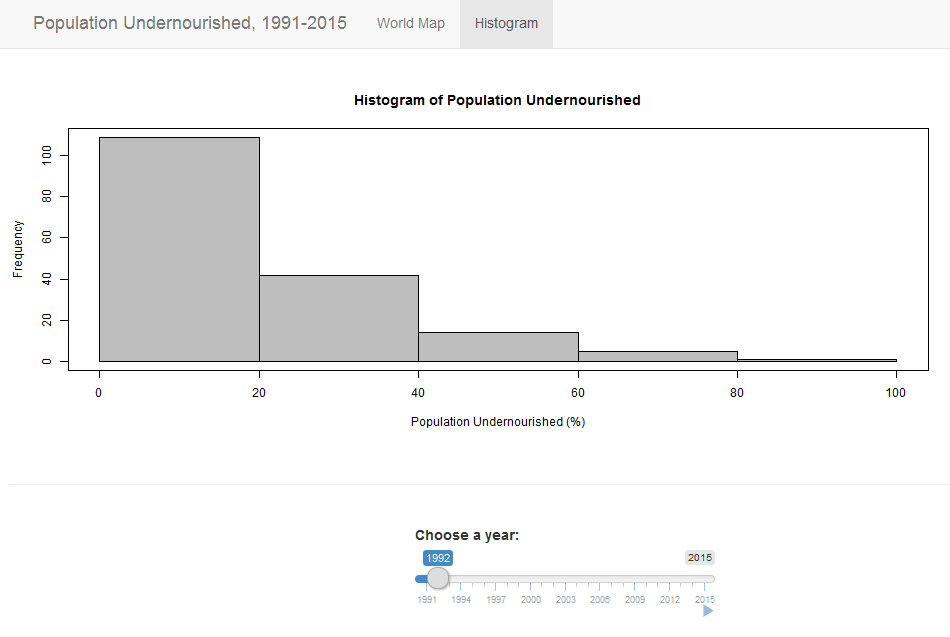
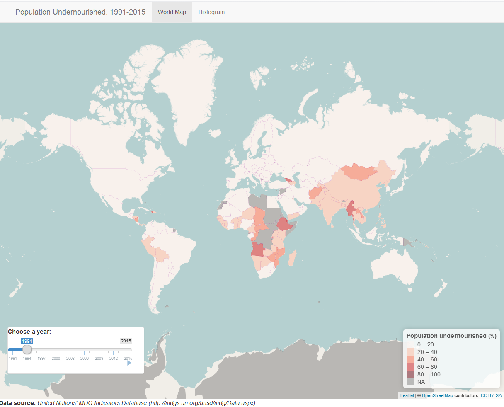
Implications for policymakers
In general, the undernourished population has decreased over time.
In 2015, there were still countries whose undernourished population falls between 40% and 60%. This is an alarmingly high number and effort needs to made to improve the situation in these countries.
Most of the countries with high undernourished population are in Africa. Policymakers could invest resources in Africa to improve the issue of undernourishment.
When observed over time, some countries fluctuate in their undernourished population. Policymakers might wish to investigate the reasons for the fluctuation and work to ensure sustainable development.
nteractive DVs of Social and Education Issues in Developing Countries and Evidence-Based Policy Implications
Star Ying
There is a lot of missing data, even for well established indicators/indexes
Especially in the social and education arena
Also very costly to create
Gender Parity Index in primary level enrolment
We can see the upward trend of primary level enrolment
Only capture if a nation is succeeding or failing, not suggest policy interventions that may help or where to help
Gender Parity Index in primary level enrolment
We can use data visualizations of existing indicators to determine where nations are falling behind
Supplement existing indicators with data from instruments that allow us to identify intervention points
Can we use alternative data sources?
administrative records,
cellphone usage,
or satellite data.
Example: Using Satellite imagery in conjunction with MDG Indicators
North Korea vs South Korea
Monthly Average Radiance Levels of various Asian Nations from 2014 to present
Monthly Average Radiance Levels of North Korean Provinces from 2014 to present
Monthly Average Radiance Levels of the Korean Peninsula Provinces from 2014 to present
Visualizations/dashboarding is useful for policy but it is limited by the strength of the underlying data used
Especially in the arena of social or education issues which can be so costly
Merits and drawbacks of data visualization for evidence-based policy development
Missing data
Correlation is not causation
Benefits of interactive data visualization
Next steps:
Create cohesive dashboard for all countries in transition
Baron, J., & Haskins, R. (2011).
Congress should use cost-effectiveness to guide social spending. Washington, DC: Brookings Institution.
Central Bureau of Statistics.
Democratic People’s Republic of Korea Final Report of the National Nutrition Survey 2012. Pyongyang, 2013.
———. DPR Korea 2008 Population Census National Report. Pyongyang, 2009.
Cohen, D., & Soto, M. (2007).
Growth and human capital: good data, good results. Journal of Economic Growth, 12(1), 51–76.
Davies, P. (2004).
Is evidence-based government possible (Vol. 19).
Presented at the Fourth Annual Campbell Collaboration Colloquium.
Liebman, J. B. (2013).
Building on recent advances in evidence-based policymaking. Washington, DC: Brookings Institution.
Mankiw, G. N., Romer, D., & Weil, D. N. (1992).
A contribution to the empirics of economic growth. Quarterly Journal of Economics, 107(2), 407–437.
Nguyen, G, Ying, S, Chun, E., Cho, H., Kyung, C. and Chun, A.Y. (2015).
Data Visualization to Aid Humanitarian Intervention Strategies, Paper presented at the European Survey Research Association Biannual Conference, Reykjavik, Iceland.
Muhlhausen, D. B. (2015). Evidence-based policymaking: A primer. The Heritage Foundation.
Sutcliffe, S., & Court, J. (2005).
Evidence-Based Policymaking: What is it? How does it work? What relevance for developing countries. Overseas Development Institute.
UNFPA. “2008 Census of Population of DPRK: Key Findings,” n.d.